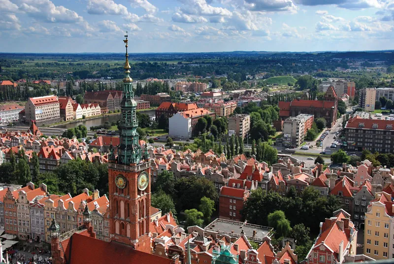

Discover Poland
Poland is a country in Central Europe with a rich history, diverse geography, and vibrant traditions. Explore its cities, landscapes, and cultural heritage.
Learn about Poland’s people, landmarks, and customs in a fun and easy way.

Geography of Poland
- Poland is bordered by Germany, Czech Republic, Slovakia, Ukraine, Belarus, Lithuania, and Russia.
- The Carpathian and Sudeten Mountains lie in the south.
- The Baltic Sea forms Poland's northern coast.
- The Vistula is the longest river in Poland.
- Highest peak: Rysy reaches 2,499 meters in the Tatra Mountains.
- Largest lake: Śniardwy covers about 113 square kilometers.
- Major city: Warsaw is Poland’s capital and largest city, located on the Vistula river.
Culture & Celebrations
Poland celebrates many holidays, including Christmas (Wigilia) and Easter (Wielkanoc), with unique customs.
- Traditional dish: Pierogi
- Traditional costume: Folk outfits (stroje ludowe)
Did You Know?
Poland has UNESCO World Heritage sites like the Wieliczka Salt Mine and Malbork Castle.
- The Białowieża Forest is one of Europe's last primeval forests.
- The Tatra Mountains include Poland’s highest peak, Rysy.
- Malbork Castle is the largest castle in the world by land area.
- Poland joined the European Union in 2004.